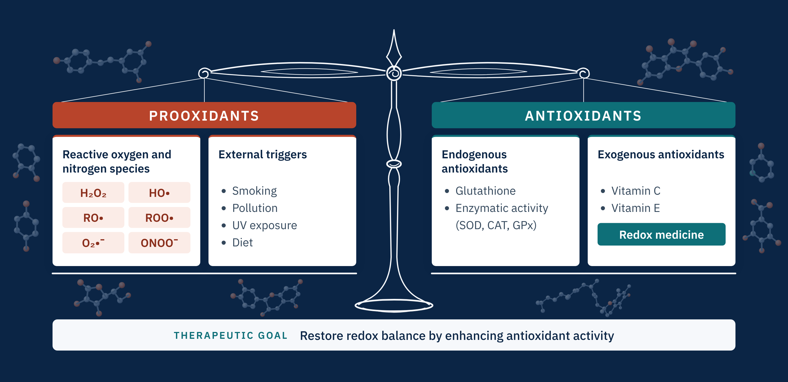

UMass Boston, PhD project
Oxidative stress arises from imbalance between prooxidants and antioxidant defenses

Antioxidant frameworks
Thiophenols vs phenols
Identify structural drivers of antioxidant activity
Phenols and polyphenols are well-known and widely investigated antioxidants, however their thiol counterparts, thiophenols, remain somehow understudied, despite the essential role of the thiol-based glutathione in cellular antioxidant defense. To address this gap, the antioxidant capacity of structurally versatile thiophenols is evaluated, incorporating both electron-donating and electron-withdrawing substituents as well as structurally more complex heteroaryl groups, and compared them with their phenol analogues. 17 phenol-thiophenol pairs were examined to identify structural factors governing antioxidant activity. Several physicochemical descriptors were calculated for all 34 compounds by DFT approaches and correlated with experimental data to determine the most predictive parameters. The antioxidant activity of the selected derivatives was assessed using standard DPPH and ABTS radical-scavenging assays.
Peer-reviewed publications
- 2025 Correlation of physicochemical properties with antioxidant activity in phenol and thiophenol analogues. Scientific Reports, 2025, 15, 73. DOI
Conference presence
- 2024 Assessing Antioxidant Activity Through Theory and Experiments: A Comparative DFT Study of Phenol and Thiophenol Analogues. ACS Spring Meeting, 2024 (poster).
Diaryl hydrazones
Alleviation of Mitochondrial Oxidative Stress in Preeclampsia
Peer-reviewed publications
- 2025 Development of Diaryl Hydrazones for Alleviation of Mitochondrial Oxidative Stress in Preeclampsia. Journal of Medicinal Chemistry, 2025, 68, 10075–10091. DOI
- 2026 Impact of Structural Features on the Antioxidant Activity of Organofluorine Diaryl Hydrazones. Molecules, 2026, 31, 78. DOI
- 2025 Mitigating oxidative stress and Anti-angiogenic state in an in vitro model of preeclampsia by Hy-12, an organofluorine hydrazone antioxidant. Current Issues in Molecular Biology, 2025, 47, 680. DOI
Diaryl hydrazone salts
From neutral to charged: effects of quaternization on radical-scavenging capacity in diarylhydrazones
Conference presence
- 2025 Exploring Antioxidant Effects of Organofluorine Diphenyl Hydrazone Quaternary Salts in Preeclampsia Therapy: a DFT Approach. ACS Spring Meeting, 2025 (oral).